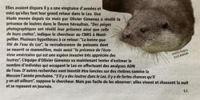
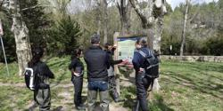
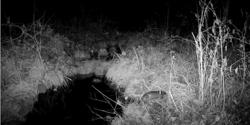
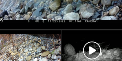
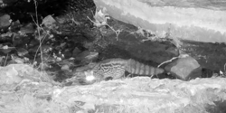
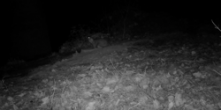
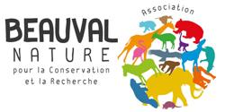

-
Newspaper article in La Gazette
Wednesday, April 12, 2023 in News

The OtterConnect project is in the press! A short article in La Gazette about our project. Thanks to Simon Challier for the interview and the article.
-
Kickoff meeting of the OtterConnect project
Monday, April 03, 2023 in News
On April 3, we gathered the members of the OtterConnect project to officially launch the work. You can find all the information about the project on the official website https://otterconnect.netlify.app/en/ and the slides of the project presentation …
-
Field trip with colleagues from the city of Montpellier
Thursday, March 30, 2023 in News

We organised a field trip with colleagues from the city of Montpellier (which supports OtterConnect) to explain the objectives of the project. Everyone had a great time, and we even got to see Lez sculpins and cistudes! Stéphanie Grosset, Laurent …
-
article in Midi Libre newspaper
Monday, March 27, 2023 in News

The OtterConnect project is in the press! You can read an article in the Midi Libre newspaper at https://www.midilibre.fr/2023/03/27/un-projet-detude-sur-le-lez-pour-comprendre-le-retour-de-la-loutre-11091062.php. Thanks to Tristan Bonnet for the …
-
Checking out the cam traps
Friday, February 24, 2023 in News
On February 17, 23 and 24, we went back to our study sites to check out the cam traps. Some worked well with nice surprises, others did not work due to incorrect settings, unfortunate locations, mysterious reasons, etc., but that’s life. We had …
-
Otter and Orb and Libron valleys
Friday, February 10, 2023 in News

In the OtterConnect project we are working on several rivers in the Occitanie region, not only the Lez in Montpellier. This work is done with the EPTB that manage the watersheds. We are fortunate to collaborate with the EPTBs of the Vidourle, of the …
-
CEFE-Montpellier city/metropole day of discussions
Thursday, February 09, 2023 in News
Our lab, the Centre for Functional and Evolutionary Ecology (CEFE), has a long-term collaboration with Montpellier city and Montpellier Méditerranée Métropole about urban ecology including issues on connectivity, global change and perceptions of …
-
Lez wildlife
Tuesday, January 24, 2023 in News

In the OtterConnect project we have a particular interest on otters obviously, but the Lez river is full of other surprises!
-
First videos of an otter on the Lez river!
Friday, January 20, 2023 in News

We had an excellent surprise when going through the videos taken by the traps we set in January on the upper Lez river!
-
Beauval Nature is supporting OtterConnect
Sunday, January 15, 2023 in News

Good news! Beauval Nature will support our project in 2023 and 2024.